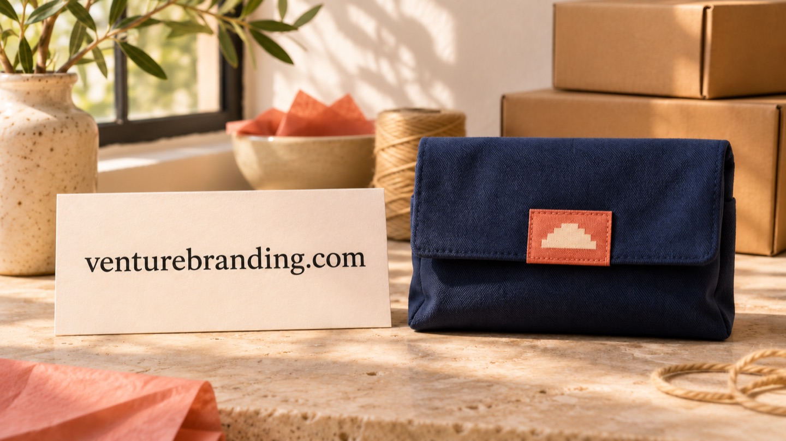

What Is a Trademark?
Understanding trademarks before you launch can help you make more informed decisions about the identity you're building.
Read article
Practical advice on trademarks, venture law, and the decisions founders face, from an attorney and fellow founder.
Explore the legal questions that matter to your business.
Start with the essentials, then explore the questions that matter to your business.
Understanding trademarks before you launch can help you make more informed decisions about the identity you're building.
Read articleAn introduction to venture capital transactions for law students and junior attorneys.
Read articleWhat co-founders should agree on early, including ownership, responsibilities, decision-making, and what happens when someone leaves.
Read articleLearn how Product Hunt works, how founders prepare for launch day, and how to tell whether a launch helped them reach early users.
Read article
Explore tax classification elections, employment tax forms, equity compensation documents, valuations, and filing extensions.
Read article
An introduction to EINs, business tax classifications, annual returns, common tax forms, and recordkeeping for founders.
Read article
Explore trademark assignments, associated goodwill, intent-to-use restrictions, and documentation of ownership transfers.
Read article
Understand why a dead trademark record does not necessarily mean a name is available, and how legal abandonment is evaluated.
Read article
Explore trademark protection for personal names, including surnames, consent requirements, ownership, and future commercial use.
Read articleUnderstand initial authorizing resolutions, the roles of incorporators and directors, and how corporations and LLCs document their initial organizational actions.
Read article
Understand foreign qualification, business licenses, DBA registrations, and state and local tax registrations when operating beyond your formation state.
Read article
Understand abandoned trademark applications, revival and reinstatement options, and how application status differs from underlying trademark rights.
Read articleExplore cybersquatting, bad faith, UDRP proceedings, and legal options when someone registers a domain using your trademark.
Read articleUnderstand goodwill, its relationship to trademark law, and how trademark protection helps preserve a business’s reputation and customer recognition.
Read article
Explore the difference between domain ownership and trademark rights, including commercial use, cybersquatting and domain-name disputes.
Read articleUnderstand trademark licensing, quality control, ownership, and the issues licensing agreements commonly address.
Read articleExplore trademark protection for app icons, including distinctiveness, ownership, specimens, software classifications, and redesigns.
Read articleUnderstand Section 4(a)(2), Regulation D, investor qualification, and state securities laws in startup financings.
Read articleExplore price per share, option pool increases, and SAFE and convertible note conversions through a worked Series A financing example.
Read articleExplore ownership, copyright, trademark protection, and potential conflicts when using an AI-generated business logo.
Read articleUnderstand how founders, owners, directors, officers, and LLC managers divide ownership and decision-making authority.
Read articleUnderstand legal risks involving privacy, accessibility, security, consumer protection, and code ownership when launching an AI-built product.
Read articleExplore how a co-founder’s departure affects equity, vesting, management roles, intellectual property, and company agreements.
Read articleUnderstand what a registered agent does, when one is required, and what founders should consider when choosing one.
Read articleLearn how foreign businesses can seek U.S. trademark registration, including filing bases, ownership, use, and attorney requirements.
Read articleUnderstand the territorial limits of U.S. trademark rights, international filing options, and considerations when entering foreign markets.
Read articleExplore when slogans and taglines qualify for trademark protection, common registration refusals, and how commercial use affects eligibility.
Read articleExplore down rounds, recapitalizations, pay-to-play provisions, and the corporate approvals and conflicts counsel must address.
Read articleExplore stock option vesting, exercise prices, ISOs and NSOs, dilution, and the legal steps involved in offering employee equity.
Read articleLearn how long trademark rights can last, when federal registrations need maintenance, and how use, renewal, and abandonment affect protection.
Read articleUnderstand how board seats, protective provisions, voting agreements, and later financing rounds affect founder control.
Read articleExplore liquidation preference multiples, participation rights, and how preferred stock affects distributions when a startup is sold.
Read articleUnderstand how rebranding affects pending trademark applications, registrations, filing dates, and existing trademark rights.
Read articleUnderstand trademark infringement, priority, registration protections, and the options available when another business uses a similar mark.
Read article
Learn how QSBS eligibility, holding periods, exclusion limits, and company structure can affect founders’ tax planning.
Read article
Understand what ™, ℠, and ® communicate, when federal registration permits use of ®, and how trademark notice affects a business.
Read articleUnderstand how trademark rights, related goods and services, geography, and consumer confusion affect whether businesses can share a name.
Read articleCompare SAFEs and convertible notes, including conversion, interest, maturity, repayment obligations, and founder dilution.
Read articleUnderstand valuation, liquidation preferences, investor control rights, and binding provisions before signing a venture capital term sheet.
Read articleUnderstand trademark ownership, the correct applicant, and how founder and company rights affect filing, assignments, and business transactions.
Read articleExplore founder ownership splits, stock issuance, vesting schedules, and what happens to equity when a founder leaves.
Read articleUnderstand the five core venture financing agreements, their distinct roles, and how they work together in a priced equity financing.
Read articleLearn who trademark scammers target, the warning signs to recognize, and how to verify official USPTO communications.
Read articleUnderstand trademark oppositions, the TTAB process, response procedures, and what happens after publication.
Read articleUnderstand trademark refusals, office actions, response deadlines, and the options available when the USPTO raises an objection.
Read articleUnderstand how common-law rights and state trademark registrations affect brand protection and trademark clearance.
Read articleUnderstand ownership percentages, employee equity, dilution, and how fundraising changes your startup’s cap table.
Read articleAn introduction to venture capital transactions for law students and junior attorneys.
Read articleWhat co-founders should agree on early, including ownership, responsibilities, decision-making, and what happens when someone leaves.
Read articleExplore the structure, economics, and drafting considerations of shadow preferred stock in venture financings.
Read articleUnderstanding the distinction between a business name and logo can help founders make informed decisions about their trademark filing strategy.
Read articleThe legal structure, economic rights, and conversion mechanics of venture preferred stock.
Read articleAn introduction to Section 83(b) elections for law students and attorneys entering emerging companies practice.
Read articleUnderstand authorized shares, outstanding stock, option pools, and fully diluted ownership in startup capitalization.
Read articleUnderstand SAFEs, convertible notes, preferred stock, and other structures used in startup financings.
Read articleUnderstand the difference between preparing to launch a brand and qualifying trademark use with actual goods or services.
Read articleLearn what happens after filing, from USPTO examination and office actions to publication, registration, and maintenance.
Read articleLearn how trademark specimens demonstrate actual use and how the appropriate evidence differs for goods, services, and software.
Read articleExplore Delaware’s corporate statute, specialized courts, and role in venture-backed company formation.
Read articleUnderstanding trademarks before you launch can help you make more informed decisions about the identity you're building.
Read articleYou can apply for federal trademark registration before your business launches. Here’s what founders should consider before filing.
Read articleLearn how trademark clearance searches help founders assess availability and potential conflicts before launching.
Read articleTry another search or explore a different topic.